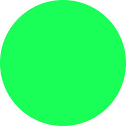
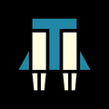
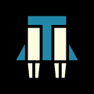

How to spot Points of Interest
Each map contains a random numbers of Points of Interest. Their icon looks like either a gemstone (meaning samples are to be collected) or a lozenge (meaning all samples have been collected. Nonetheless, other loot such as  Medals or
Medals or  Super Credits might be left).
Super Credits might be left).
You may spot them by identifying shapes on your map, such as buildings. When you are nearby, they are also indicated by a question mark on your compass.
Another tactic is to wear  Scout armor, which can cause the Point of Interest message to appear when you scan the map with your cursor, before the locations have actually been revealed. It doesn't work 100% of the time, but it's consistent enough to be a great help during farming sessions.
Scout armor, which can cause the Point of Interest message to appear when you scan the map with your cursor, before the locations have actually been revealed. It doesn't work 100% of the time, but it's consistent enough to be a great help during farming sessions.
Requisition slips
Maximum: 50.000
Requisition slips are used to buy stratagems, advanced ship modules and weapon upgrades. Of all the items you'll need to farm, it's the one you'll never be short of. Just completing the main objective of a  10 | Super Helldive mission then triggering the end of it by depleting all your reinforcements is enough to reward you with around 5.000 Requisition slips.
10 | Super Helldive mission then triggering the end of it by depleting all your reinforcements is enough to reward you with around 5.000 Requisition slips.
If you're a fierce stratagem buyer and need to stock up on Requisition slips in no time, we therefore recommend you to do some Blitz: Search and Destroy ( 10 | Super Helldive) missions in the Automaton front the Any% speedrun way. You basically have to destroy a given number of fabricators before ending the mission by killing yourself until you have no reinforcements left. To find out how to do this in detail, refer to the pages covering how to speedrun this mission - for both multiplayer and solo players.
10 | Super Helldive) missions in the Automaton front the Any% speedrun way. You basically have to destroy a given number of fabricators before ending the mission by killing yourself until you have no reinforcements left. To find out how to do this in detail, refer to the pages covering how to speedrun this mission - for both multiplayer and solo players.
Experience
| Name | Faction | Modifiers to avoid |
|---|---|---|
| Blitz: Search and Destroy |  Automatons Automatons |
Complex Stratagem Plotting |
| Blitz: Destroy Illuminate Warp Ships | Complex Stratagem Plotting | Leviathan Blockade | |
| Blitz: Search and Destroy |  Terminids Terminids |
Complex Stratagem Plotting | Atmospheric Spores |
| Destroy Command Bunkers | Automatons |
Complex Stratagem Plotting |
| Neutralize Orbital Defenses | Automatons |
Complex Stratagem Plotting |
| Automatons |
Complex Stratagem Plotting | |
| Cleanse Infested District | Terminids |
Complex Stratagem Plotting | Atmospheric Spores |
| Restore Air Quality | Terminids |
Complex Stratagem Plotting | Atmospheric Spores |
| Purge Hatcheries | Terminids |
Complex Stratagem Plotting | Atmospheric Spores |
| Retrieve Recon Craft Intel | Complex Stratagem Plotting | Leviathan Blockade | |
| Free Colony / Free the City | Complex Stratagem Plotting | Leviathan Blockade |
As we mention it in the Get started: all in one guide, experience's only utility past level 25 is to reflect your game time and eventually unlock rank titles.
The best way to farm experience is to complete the shortest missions at level  10 | Super Helldive the 100% speedrun way - that is to say full clearing the map. This is also a good method to farm samples.
10 | Super Helldive the 100% speedrun way - that is to say full clearing the map. This is also a good method to farm samples.
Blitz: Search and Destroy is by far the most appropriate high level mission with side objectives and outposts.
From top to bottom, here are the best  10 | Super Helldive missions we recommend you to do in order to farm experience.
10 | Super Helldive missions we recommend you to do in order to farm experience.
Medals
Maximum: 250
Farming Medals can come along with either Requisition slips or Weapon levels or Super Credits. You can collect them in Points of Interest during low level missions as you're looking for Super Credits.
Nonetheless, the fastest way to acquire them is, again, to do Blitz: Search and Destroy ( 10 | Super Helldive) missions in the Automaton front the Any% speedrun way. You basically have to destroy a given number of fabricators before ending the mission by killing yourself until you have no reinforcements left. To find out how to do this in detail, refer to the pages covering how to speedrun this mission - for both multiplayer and solo players.
10 | Super Helldive) missions in the Automaton front the Any% speedrun way. You basically have to destroy a given number of fabricators before ending the mission by killing yourself until you have no reinforcements left. To find out how to do this in detail, refer to the pages covering how to speedrun this mission - for both multiplayer and solo players.
Samples
Without a pinch of originality, Blitz: Search and Destroy ( 10 | Super Helldive) missions in the Automaton front is the best way to acquire all sample types. Rare samples are either flowers or minerals and emit a particular sound that can help you find them.
10 | Super Helldive) missions in the Automaton front is the best way to acquire all sample types. Rare samples are either flowers or minerals and emit a particular sound that can help you find them.
| Type | Maximum | Sound clue |
|---|---|---|
| Common | 500 | / |
| Rare | 250 | |
| Super | 100 | / |
Common and Rare samples are to be found in the following places: outposts, side objective sites, Points of Interest, extraction site.
Common samples goldmine
The introduction of Megacities in the Terminids front brought the Cleanse Infested District mission. It's the only one that has 80 Common samples to be collected (while the usual number is 40). You may find around 10 of them at the foot of each Infested Tower. It's by far the best way to farm Common samples.
How to find Super samples
The amount of Super samples you can find in each level  10 | Super Helldive mission is quite low. You will hopefully find them all in the same Point of Interest whose position of course change from a map to another. You want to find a rock structure of this shape with silver veins.
10 | Super Helldive mission is quite low. You will hopefully find them all in the same Point of Interest whose position of course change from a map to another. You want to find a rock structure of this shape with silver veins.
More Rare and Super
 10 | Super Helldive missions feature the heaviest Automatons and Terminids outpost: Fortress and Meganest. Within them, you'll find either an Automaton Skull or a Terminid Egg. If you manage to extract with them, you'll get extra Rare and Super samples.
10 | Super Helldive missions feature the heaviest Automatons and Terminids outpost: Fortress and Meganest. Within them, you'll find either an Automaton Skull or a Terminid Egg. If you manage to extract with them, you'll get extra Rare and Super samples.
Super Credits
Points of Interest always randomly contains one of these random loots:
- Medals.
- Rare samples.
- Requisition slips.
- Super Credits.
- Support weapons.
Since Rare samples only spawn at level 4 | Challenging and higher, low level missions are optimal to farm Super Credits because your chances to find them is higher. This is why we recommend to do level 1 | Trivial missions in the Illuminate front. You won't have to bother with neither enemies but Interloper / Stingray nor outposts.
The most efficient way to do so is playing in duo / trio / full squad and explore the map with  Fast Recon Vehicle and  Jump Pack. Don't forget to bring some explosive weapons / throwables to open containers. You may also see what's inside a two buttons bunker by positioning your Helldiver against the door, aiming in first person mode then diving to see through the door.
Fast Recon Vehicle and  Jump Pack. Don't forget to bring some explosive weapons / throwables to open containers. You may also see what's inside a two buttons bunker by positioning your Helldiver against the door, aiming in first person mode then diving to see through the door.
Weapon levels
To gain levels with a given weapon, you only need to have it equipped during a mission without actually needing to use it. The level of the mission matters the most.
You see it coming, the fastest way to upgrade them is to do Blitz: Search and Destroy ( 10 | Super Helldive) missions in the Automaton front the Any% speedrun way. You basically have to destroy a given number of fabricators before ending the mission by killing yourself until you have no reinforcements left. To find out how to do this in detail, refer to the pages covering how to speedrun this mission - for both multiplayer and solo players.
10 | Super Helldive) missions in the Automaton front the Any% speedrun way. You basically have to destroy a given number of fabricators before ending the mission by killing yourself until you have no reinforcements left. To find out how to do this in detail, refer to the pages covering how to speedrun this mission - for both multiplayer and solo players.
If you bring another weapon than Exploding Crossbow, Eruptor or Scorcher, make sure to take a throwable that can kill you swiftly.